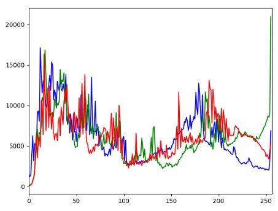
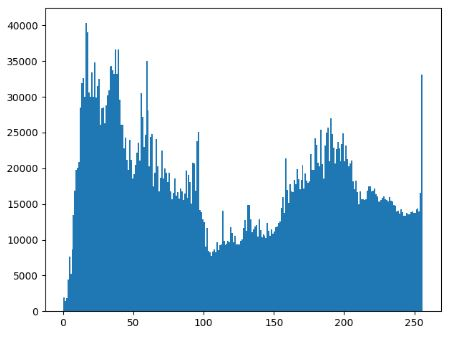
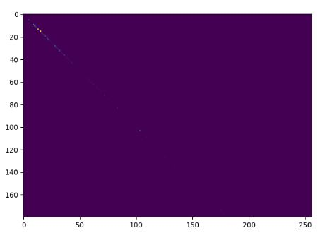
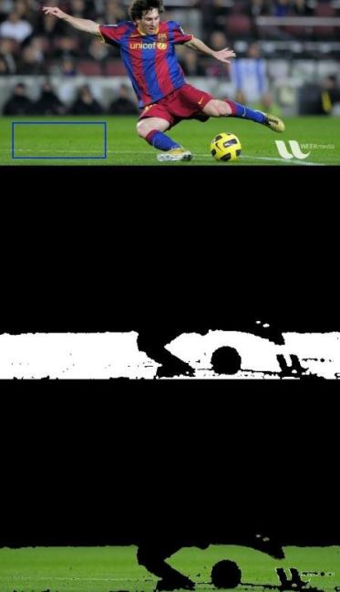

轮廓可以是简单连续的点连在一起的曲线，具有相同的颜色或灰度。轮廓在形状分析和物体的检测和识别中很有用。
1 轮廓
1.1 初识轮廓
为了更加准确，要使用二值化图像。在寻找图像之前，要进行阀值化处理或Canny边界检测。
查找轮廓的函数会修改原始图像，如果在找到轮廓之后还想使用原始图像的话，应该将原始图像存储到其它变量之中。
在OpenCV中，查找轮廓就像在黑白背景中找白色物体。
1 | #在二值图像中查找轮廓，参数:输入图像、轮廓检索模式、轮廓近似方法，返回值：图像、轮廓、层析结构 |
1.2 轮廓的特征
1 | #图像的矩(根据图像的矩可近一步计算出图像的重心) |
2.直方图
直方图是整幅图像的灰度分布，x轴表示灰度值，y轴表示图片中具有同一个灰度值点的数目。
2.1 一维直方图
统计直方图
1
2
3
4img = cv2.imread('home.jpg',0)
# 别忘了中括号 [img],[0],None,[256],[0,256] ，只有 mask 没有中括号
# 参数:原图像、图像通道、掩模、直方图x轴分组后每组大小、像素值的范围
hist = cv2.calcHist([img],[0],None,[256],[0,256])画出彩色图的一维直方图
1
2
3
4
5
6
7
8
9
10#画出彩色BGR的直方图
import cv2
from matplotlib import pyplot as plt
img = cv2.imread('image01.jpg')
color = ('b','g','r')
for i,col in enumerate(color):
histr = cv2.calcHist([img],[i],None,[256],[0,256])
plt.plot(histr,color = col)
plt.xlim([0,256])
plt.show()

- 画出灰度图的一维直方图
1
2
3
4
5
6#画出灰度值的直方图
import cv2
from matplotlib import pyplot as plt
img = cv2.imread('image01.jpg', cv2.IMREAD_COLOR)
plt.hist(img.ravel(),256,[0,256]);
plt.show()

使用掩模
要统计图像某个局部区域的直方图只需要构建一副掩模图像。将要统计的部分设置成白色，其余部分为黑色，就构成了一副掩模图像。然后把这个掩模图像传给函数就可以了。直方图均衡化
常用来作为图像增强。1
2
3
4
5
6img = cv2.imread('image01.jpg', 0);
# openCV中的直方图均衡化函数，返回均衡化后图像
equ = cv2.equalizeHist(img);
# 横向拼接
res = np.hstack((img, equ));
cv2.imwrite('res.jpg', res);
- CLAHE直方图均衡化
1
2
3
4
5
6import numpy as np
import cv2
img = cv2.imread('tsukuba_l.png',0)
clahe = cv2.createCLAHE(clipLimit=2.0, tileGridSize=(8,8))
cl1 = clahe.apply(img)
cv2.imwrite('clahe_2.jpg',cl1)
2.2 2D直方图
上面所介绍的是一维直方图，多用来处理灰度图。对于彩色图像，通常情况下我们需要考虑每个的颜色(Hue)和饱和度(Saturation)。根据这两个特征绘制2D直方图。
统计2D直方图
使用cv2.calcHist()之前，要先将图像的颜色空间从BGR转换到HSV。1
2
3
4
5
6import cv2
from matplotlib import pyplot as plt
img = cv2.imread('image01.jpg', cv2.IMREAD_COLOR)
hsv = cv2.cvtColor(img, cv2.COLOR_BGR2HSV)
#参数：原始图像，通道(这里0,1分别表示颜色H和饱和度S)，掩模，histSize，ranges(H和S的range)
hist = cv2.calcHist(images=hsv, channels=[0,1], mask=None, histSize=[180,256], ranges=[0,180, 0,256])绘制2D直方图
1
2plt.imshow(hist, interpolation = 'nearest')
plt.show();

2.3 直方图反向投影
直方图反向投影可以用来做图像分割，或者在图像中找寻感兴趣的部分。它会输出与输入图像同样大小的图像，其中的每一个像素值代表了输入图像对应点属于目标图像的概率。更简单来说，输出图像中像素值越高的点就越可能代表要搜索的目标（在输入图像所在位置）。直方图投影经常与camshift算法等一起使用。
1 | import cv2 |
下面是我使用的一幅图像。我使用图中蓝色矩形中的区域作为取样对象，再根据这个样本搜索图中所有的类似区域（草地）。
